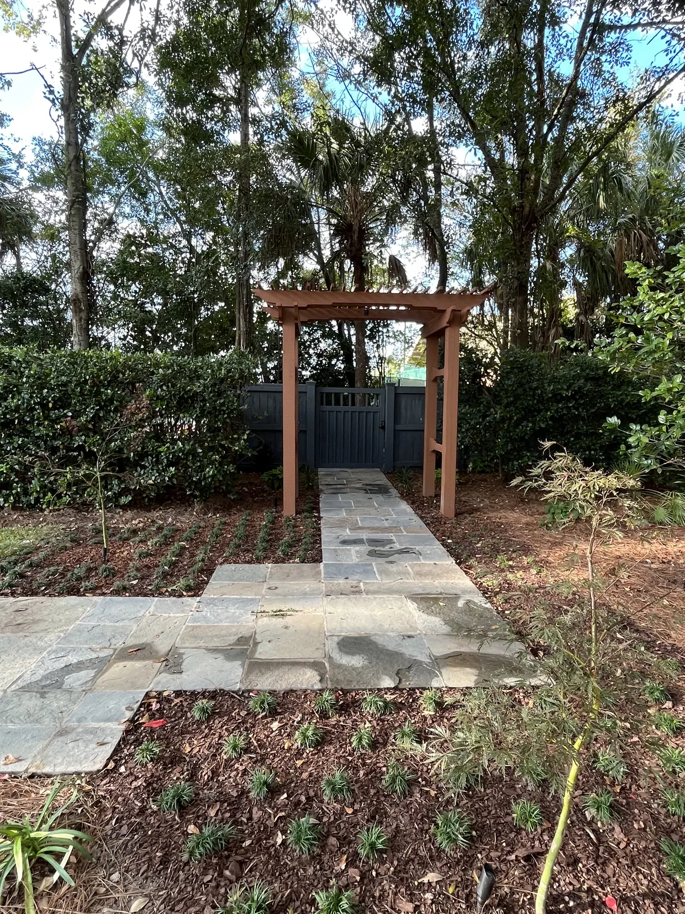

Landscaping on Kiawah Island, SC

Local & Family-Run
Kiawah Island Landscaping, Natural and Lowcountry
Cramers Landscaping is a family company. Doug Cramer has worked in landscaping his whole life, with more than 30 years of experience, and his son Zach is our licensed residential builder. Doug and Zach design every project themselves, and our own crew builds it.
On Kiawah we landscaped a new-construction home from bare ground: the plants, a tabby driveway, mulch, irrigation and sod.
New construction is the best time to do it properly. Builder packages are the cheapest planting and the smallest slab that satisfies the contract, which is why those yards all look the same. A new lawn is only as good as the grade underneath it, so grading and drainage come before sod and planting.
Working on Kiawah

Kiawah requires reviews, and everyone coming onto the island needs a gate pass. That applies to our crew and to our concrete delivery trucks as well, so deliveries get scheduled around it.
We plan for both from the start. If a design needs to go through review, we can prepare and submit the application for you.
Kiawah is more than an hour from Charleston and Summerville, so there is a charge for the proposal trip. It comes off the price if you go ahead with the build, and it is not refundable if you do not.
For a natural, wooded lot we lean on plants that belong here: muhly grass, wax myrtle, yaupon holly, sabal palmetto, live oak and magnolia. St. Augustine is the best lawn choice for shade under live oaks, and pine straw suits natural yards.
Designing for Kiawah
Kiawah is built around its natural setting, and the island’s Architectural Review Board exists to keep it that way. ARB approval is required for any exterior improvement, and its landscape standards call for native plantings and the preservation of mature trees, the live oaks above all. A new home goes through a site analysis and then conceptual, preliminary and final review, and the landscape plan is part of that.
The look that fits Kiawah is a natural Lowcountry woodland: plants that belong here and natural materials. On our Kiawah job the driveway was tabby, and tabby and salt-void finishes both look good for the money. For lighting we start with paths and steps, then one good tree. Near the ocean we use solid brass, copper or marine-grade aluminum fixtures, because plastic ones corrode.
We also build pergolas, outdoor kitchens, patios and outdoor showers on Kiawah. Each goes through the same review, and we can prepare and submit the application for you.
What the Kiawah ARB Guidelines Say
Kiawah’s guidelines, Designing with Nature, run to 82 pages; the ARB publishes the 2026 edition. The points that shape most landscapes:
- Plants: at least two-thirds of new trees must be native, invasive species are banned, and mulch is pine straw or natural hardwood bark only.
- Lawns should be minimal, kept back from property lines and the marsh, and sodded rather than seeded. Artificial turf is allowed once the ARB approves a sample.
- Irrigation is required, with drip in the planted areas.
- Driveways can be dark gravel, pervious pavers, brick, or exposed-aggregate, salt or tabby-finish concrete. Light-colored driveways are not allowed, and curving drives are preferred.
- Lighting: no motion-sensor lights and no unhooded spotlights. Low-voltage metal fixtures are encouraged, and tree uplighting is kept limited.
- Fences are 5 feet at most, simple and dark, and screened with evergreen planting.
- Trees: you need ARB approval to remove or prune any oak of 3 inches or more, or any other tree of 6 inches or more, measured at breast height. Every oak of 16 inches and over has to be preserved unless the board finds there is no reasonable design solution that saves it, and removing one can mean replanting the same total caliper back. Major clearing is best scheduled outside bobcat denning season, April through June.
How Much You Have to Plant, and How Big
This is the part that surprises people, and it is worth knowing before you budget. Kiawah does not just approve a look — it sets minimum quantities and minimum plant sizes, and a plan that misses them comes back.
- Tree count: one tree of 3 inches caliper or more for every 1,000 square feet of lot, and 70% of the trees already on the lot have to stay. Palms count as a third of a tree each. Two-thirds of the trees you add must be native — oak, magnolia, hickory, palmetto — and any tree counted toward the minimum has to be native and at least 4 inches caliper.
- Foundation planting: shrubs against the house must reach at least half the height of the foundation, measured from finish grade to the first floor you live on, or 4 feet, whichever is taller. They have to wrap the whole building, not just the front, and the board can ask for bigger material to settle a tall foundation.
- Shrub sizes: on a single-family or patio lot, half of every shrub you install must be 7 gallon or larger, and the rest at least 3 gallon. Townhome and commercial sites are 7 gallon throughout.
- Screening: a double layer of evergreen planting between the house and the street or the neighbours, and multilayered evergreen buffers along shared lines if the lot backs onto a golf course.
- Lawn placement: turf stays at least 10 feet off the property lines and outside the stormwater buffers, which are usually 15 feet from a marsh or lagoon edge, whichever is stricter.
Those minimums are why a Kiawah landscape costs what it does, and why the plant order gets priced off the lot size rather than off a picture. We work the numbers into the design from the start, so the plan that goes to the board already satisfies them.
Changes to an existing landscape need a plan from a licensed landscape architect, and the ARB meets twice a month.
Rules as published when we checked in 2026. Guidelines change, and the board or town always has the final say, so we confirm the current rules for your property before a design is final.
Every Service We Offer, Available On Kiawah Island
The projects on this page are only part of what we do. We offer all of our services on Kiawah Island, designed by Doug and Zach and built by our own crew. From the first site visit to the final walkthrough, here’s how a project works.
- Landscaping: landscape design and installation, plants and trees, sod, artificial turf, irrigation, drainage and grading, landscape lighting, mulch and bed edging, fountains and water features
- Hardscaping: patios and pavers, concrete and driveways, retaining walls, fire pits, pool decks
- Outdoor Structures: pergolas, pavilions, outdoor kitchens, outdoor fireplaces, outdoor showers
Worth knowing before you start
- Landscape design and installation: The people who draw it are the people who build it, and we start with the house: the planting and the proportions should suit the architecture. We can design to a fixed budget, including phasing a project across a couple of years.
- Pergolas: Pergolas run $10,000 to $30,000. At $10,000 it is simple. At $30,000 it has trim, a ceiling, a roof, electrical and possibly a kitchen under it. It is the least expensive of pergola, pavilion and gazebo, which is why most clients choose one. Never untreated pine outdoors. Pressure-treated pine is the common framing, and cedar handles humidity better.
- Fountains and water features: A simple fountain kit starts around $1,000. Custom work with multiple layers or a built-in fire feature runs up to $30,000. We build custom fountains in poured concrete rather than block, because a block fountain relies on a membrane and will leak down the road.
- Patios and pavers: Travertine stays cool underfoot, which matters around pools.
Small jobs are welcome too. There’s no minimum job size.
What Projects Typically Cost
| Full house landscape | $20,000+ in plants |
|---|---|
| Irrigation | about $1,000 a zone, plus $1,500 for backflow and timer |
| Sod | $750 a pallet installed |
| Poured concrete | about $12 per sq ft |
| Mulch | $105 a yard |
Ranges are typical, not quotes. Size, materials, site conditions and finishes move the number. You’ll get an exact price after the consultation.
Frequently Asked Questions
Have you worked on Kiawah Island?
Yes. We installed a new-construction landscape on Kiawah: plants, a tabby driveway, mulch, irrigation and sod.
How do Kiawah’s reviews and gate access affect a project?
Kiawah requires reviews, and gate passes are needed not only for our crew but for our concrete delivery trucks. We plan for both so they don’t hold up the work.
Is the consultation free on Kiawah?
The consultation is free in our main service area. Kiawah, Seabrook, Wadmalaw and Awendaw, and anywhere else more than an hour from Charleston or Summerville, carry a charge for the proposal trip. It comes off the price if you go ahead with the build, and it is not refundable if you do not.
What does a new-construction landscape cost?
A full house landscape is $20,000 or more in plants. Irrigation is about $1,000 a zone plus $1,500 for the backflow preventer and timer, sod is $750 a pallet installed, and poured concrete is about $12 per square foot.
Talk to Doug or Zach About Your Yard
Tell us what you have in mind for your Kiawah Island property, and we’ll set up a consultation at your home.